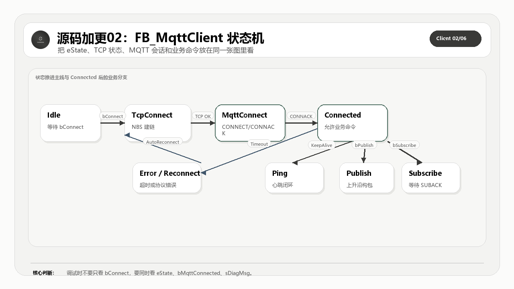

这一篇完整公开 FB_MqttClient 主功能块和与状态、错误、即时发送相关的方法。它是整套客户端源码的运行中枢。
适合谁收藏
- 想知道 FB_MqttClient 为什么不能写成一堆 IF 的读者。
- 正在排查连接、重连、错误锁存和状态跳转问题的工程师。
- 需要复用 ST 状态机设计方法的 PLC 开发者。
本篇核心图

读图重点：先看源码对象之间的职责边界，再看数据、状态和错误如何沿着调用链流动。源码加更不是把文件名列出来，而是把完整代码、工程意图和验证口径一起讲清楚。
先给结论
主 FB 的价值是把 TCP、MQTT 会话、出站队列、入站分发和错误诊断收敛到一个确定周期。它不是“大函数”，而是所有工程边界的调度器。
从理论到代码实现链路
MQTT 标准给的是报文类型、固定头、可变头、载荷、QoS 交互和会话语义；PLC 工程真正要解决的是周期扫描、缓冲区长度、错误锁存、在线变量、连接重入和现场可诊断性。
所以这套开源实现不能只按协议章节拆，也不能只按文件名拆。正确读法是把标准约束翻译成程序对象：入口程序负责给命令和观测点，GVL 和 DUT 定义容量与数据模型，主功能块负责调度状态机，构建方法负责出站报文，处理方法负责入站报文，辅助方法负责长度、队列、事务、主题和诊断边界。
本篇完整公开 FB_MqttClient.st 主体、TCP 外层周期调用以外的错误处理和即时发送辅助方法。
再往下一层看，这里其实有两条线同时存在。第一条是协议线：固定头、Remaining Length、PacketId、QoS、Topic、Payload 和 Reason Code 必须能按 MQTT 规则组合起来。第二条是 PLC 工程线：每个周期只能推进有限步骤，所有中间状态都要能被在线变量观察，所有错误都要能被锁存并归类，所有缓冲区长度都要在写入前被检查。
这就是源码加更必须完整公开的原因。只给几段核心片段，读者最多能看懂某个判断；把完整对象放出来，读者才能看到对象之间如何传递状态、长度、错误和诊断信息。完整源码讲解不是为了堆代码，而是为了让读者能从标准约束一路追到可运行的 ST 对象，再从现场现象反向定位到具体边界。
本篇公开的完整源码范围
| 序号 | 源码对象 | 讲解重点 |
|---|---|---|
| 1 | FB_MqttClient.st | 源码对象职责和验证边界 |
| 2 | M_SetError.st | 源码对象职责和验证边界 |
| 3 | M_ResetError.st | 源码对象职责和验证边界 |
| 4 | M_GetNextPacketId.st | 源码对象职责和验证边界 |
| 5 | M_ServiceImmediateTx.st | 源码对象职责和验证边界 |
| 6 | M_PrepareNextRestoreSubscription.st | 源码对象职责和验证边界 |
怎么读这些源码
第一遍只看对象职责：这个文件解决哪一层问题，是入口、模型、状态、构建、接收、事务，还是诊断。
第二遍看边界变量：长度、索引、PacketId、QoS、状态枚举、错误码、缓冲区水位和在线观测量。PLC 通信代码最怕的是“能跑但不可诊断”，所以每个关键对象都要问一句：现场出问题时，我能不能从它留下的变量看出原因。
第三遍再看具体语句。源码全部公开，不等于读者要从第一行顺序读到最后一行。更稳的方式是用图和表先建立地图，再回到完整代码里确认每个边界确实落地。
工程验证路径
在线观察时同时看 eState、xConnected、xError、udiLastError、发送命令和接收锁存量。状态和错误不能分开看。
本篇完整开源代码
完整代码 1：FB_MqttClient.st
这一段完整公开 FB_MqttClient.st。读代码时先看对象职责，再看状态、长度、错误和返回值，不要只抄几行赋值。
/// =======================================================================
/// 名称 : FB_MqttClient
/// 功能 : MQTT 客户端（支持 MQTT 3.1.1 / MQTT 5.0）
/// 说明 : 实现 MQTT 连接、发布、订阅、接收、心跳与重连状态机
/// 编程人员 : ControlRookie
/// 时间 : 2026-01-10
/// 版本 : V2.1
/// =======================================================================
{attribute 'hide_all_locals'}
FUNCTION_BLOCK FB_MqttClient
VAR_INPUT
// 连接配置
bEnable : BOOL := TRUE; // 功能块总使能；FALSE 时停止状态机并清空运行态
bConnect : BOOL; // 连接命令；上升沿发起连接，下降沿主动断开
sBrokerIP : STRING := '192.168.20.222'; // Broker 的 IPv4 地址或主机地址字符串
uiPort : UINT := 1883; // Broker 提供 MQTT 服务的监听端口号
sClientID : STRING; // MQTT 客户端标识符；Broker 用它识别当前会话
sUsername : STRING; // MQTT 用户名；Broker 开启鉴权时参与 CONNECT 认证
sPassword : STRING; // MQTT 密码；Broker 开启鉴权时参与 CONNECT 认证
// 协议版本
eVersion : E_MqttVersion := E_MqttVersion.byMqttVersion311; // 连接时使用的 MQTT 协议版本
// 连接参数
bCleanSession : BOOL := TRUE; // MQTT 3.1.1 会话清理标志；TRUE 表示断线后不保留旧会话
uiKeepAlive : UINT := 60; // 客户端心跳保活周期[s]
bUseSSL : BOOL := FALSE; // 是否启用 SSL；当前版本预留，未接入 TLS 传输层
bAutoReconnect : BOOL := TRUE; // 异常断线后是否自动进入重连流程
uiReconnectDelay : UINT := 5000; // 每次自动重连前的等待时间[ms]
// MQTT 5.0 连接属性
udiSessionExpiry : UDINT := 0; // “Broker 在你断线后，愿意帮你保留会话多久”的秒数[s]
uiReceiveMax : UINT := 65535; // 客户端告诉 Broker“我最多允许同时压多少条 QoS>0 未完成消息给我”
udMaxPacketSize : UDINT := 4096; // 客户端声明可接收的最大 MQTT 报文长度[byte]
bRequestResponseInfo : BOOL := FALSE; // 是否请求响应信息
bRequestProblemInfo : BOOL := TRUE; // 是否请求问题信息
// 遗嘱消息
bWillFlag : BOOL := FALSE; // 是否启用遗嘱消息；异常掉线时由 Broker 代发
bWillRetain : BOOL := FALSE; // 遗嘱消息是否以 Retain 方式保留
eWillQoS : E_MqttQoS := E_MqttQoS.byQoS0; // 遗嘱消息 QoS 等级
sWillTopic : STRING(GVL_Mqtt.cnMaxTopicLen); // 遗嘱消息发布主题
sWillMessage : STRING(GVL_Mqtt.cnMaxPayloadSize); // 遗嘱消息载荷文本
// 发布参数
bPublish : BOOL := FALSE; // 发布命令；上升沿发送一条消息
sPubTopic : STRING(GVL_Mqtt.cnMaxTopicLen) := 'CodeSys'; // 发布主题
sPubPayload : STRING(GVL_Mqtt.cnMaxPayloadSize) := 'This is CodeSys'; // 发布载荷
ePubQoS : E_MqttQoS; // 发布消息 QoS 等级
bPubRetain : BOOL; // 发布消息 Retain 标志
// 订阅参数
bSubscribe : BOOL := FALSE; // 订阅命令；上升沿发送一次订阅请求
sSubTopic : STRING(GVL_Mqtt.cnMaxTopicLen) := 'CodeSys'; // 订阅主题过滤器
eSubQoS : E_MqttQoS; // 订阅请求期望的最大 QoS 等级
udiSubscriptionId : UDINT; // MQTT 5.0 订阅标识符；大于 0 时随 SUBSCRIBE 一起发送
bUnsubscribe : BOOL; // 取消订阅命令；上升沿发送一次取消订阅请求
sUnsubTopic : STRING(GVL_Mqtt.cnMaxTopicLen) := 'CodeSys'; // 取消订阅使用的主题过滤器
END_VAR
VAR_OUTPUT
// 状态信息
eState : E_MqttState; // 客户端当前状态机状态
bIsConnected : BOOL; // TCP 层连接状态
bMqttConnected : BOOL; // MQTT 会话连接状态；收到有效 CONNACK 后置位
bError : BOOL; // 错误标志；最近一次流程失败后置位
eErrorID : NBS.ERROR; // 当前错误码
sDiagMsg : STRING; // 当前诊断信息文本
// 订阅列表管理
aSubscriptions : ARRAY[1..GVL_Mqtt.cnMaxSubscriptions] OF ST_MqttSubscription; // 订阅列表
uiSubscriptionCount : UINT := 0; // 当前仍由客户端本地订阅表维护的有效主题数量
// 接收消息
sRecTopic : STRING(GVL_Mqtt.cnMaxTopicLen); // 最新接收主题
sRecPayload : STRING(GVL_Mqtt.cnMaxPayloadSize); // 最新接收载荷
aRecTopicList : ARRAY[0..GVL_Mqtt.cnMaxHistory] OF STRING(GVL_Mqtt.cnMaxTopicLen); // 接收主题历史
aRecPayloadList : ARRAY[0..GVL_Mqtt.cnMaxHistory] OF STRING(GVL_Mqtt.cnMaxPayloadSize); // 接收载荷历史
byReceivedQoS : BYTE; // 最新接收消息 QoS
bReceivedRetain : BOOL; // 最新接收消息保留标志
END_VAR
VAR
rtrigConnect : R_TRIG; // 连接命令上升沿检测
ftrigConnect : F_TRIG; // 连接命令下降沿检测
rtrigPublish : R_TRIG; // 发布命令上升沿检测
rtrigSubscribe : R_TRIG; // 订阅命令上升沿检测
rtrigUnsubscribe : R_TRIG; // 取消订阅命令上升沿检测
// 超时计时
tTimeout : TIME; // 当前状态机这一步允许等待多久后判定超时[ms]
tonTimer : TON; // 跟踪当前状态等待是否超时的主定时器
tonKeepAlive : TON; // 跟踪“多久没和 Broker 交互，需要发心跳”的保活定时器
tonReconnect : TON; // 断线后进入下一次自动重连前的等待定时器
eLastState : E_MqttState; // 上一周期状态
// TCP连接对象
fbTcpClient : NBS.TCP_Client; // TCP 客户端实例
fbTcpRead : NBS.TCP_Read; // TCP 读取实例
fbTcpWrite : NBS.TCP_Write; // TCP 写入实例
hConnection : NBS.CAA.HANDLE; // TCP 连接句柄
stIP : NBS.IP_ADDR; // Broker 地址结构；用于把字符串 IP 交给 NBS TCP_Client
bTcpConnect : BOOL; // TCP 连接使能标志
bTcpRead : BOOL; // TCP 读取使能标志
bTcpWrite : BOOL; // TCP 写入使能标志
bWriteDoneLatched : BOOL; // TCP 写入完成锁存标志
bHasRead : BOOL; // 本周期已读取完成标志
bHasWritten : BOOL; // 本周期已写入完成标志
udiBytesRead : UDINT; // 本次实际从 TCP 连接读取的字节数[byte]
aTxBuf : ARRAY[0..GVL_Mqtt.cnSendBufferSize - 1] OF BYTE; // 发送缓冲区
aRxBuf : ARRAY[0..GVL_Mqtt.cnRecvBufferSize - 1] OF BYTE; // 接收缓冲区
uiTxLength : UINT; // 当前发送缓冲区内待发报文长度[byte]
uiRxLength : UINT; // 当前接收缓冲区内已缓存报文长度[byte]
// 系统时间
stTimeZone : Util.TimeZone := (iBias := 480); // 本地时间换算使用的时区偏移配置[min]
uliSysTime : ULINT; // 当前本地系统时间戳[ms]
// MQTT协议相关
bDup : BOOL; // DUP 重发标志
uiPacketId : UINT := 1; // 本客户端下一次准备分配出去的 Packet Identifier
uiQoS2PacketId : UINT; // 当前 QoS2 四步握手流程里正在跟踪的 Packet Identifier
uiExpectedPacketId : UINT; // 状态机此刻要求服务器回包时必须匹配的 Packet Identifier
byExpectedMsgType : BYTE; // 当前期待的报文类型
xWaitingForAck : BOOL; // 等待通用 ACK 标志
xWaitingForSubAck : BOOL; // 等待 SUBACK 标志
xWaitingForUnsubAck : BOOL; // 等待 UNSUBACK 标志
bPingPending : BOOL; // 心跳响应等待标志
uiSendQuota : UINT := GVL_Mqtt.cnDefaultReceiveMax; // MQTT 5.0 下服务器还允许我们继续发送多少条 QoS>0 未完成消息
uiInflightCount : UINT; // 当前仍在等待 ACK / PUBREC / PUBCOMP 的出站 QoS>0 消息数量
uiTopicAliasCount : UINT; // 当前本地主题别名表中已登记的有效条目数量
uiNextTopicAlias : UINT := 1; // 下一个发送主题别名
uiPendingSubPacketId : UINT; // 当前这次 SUBSCRIBE 请求发出去后等待 SUBACK 的 Packet Identifier
uiPendingUnsubPacketId : UINT; // 当前这次 UNSUBSCRIBE 请求发出去后等待 UNSUBACK 的 Packet Identifier
uiRetryInflightIndex : UINT; // 下个扫描周期需要优先重发的在途消息槽位索引
uiRxInFlightQosCount : UINT; // 接收侧尚未完成握手闭环的 QoS>0 入站消息数量
sActiveSubTopic : STRING(GVL_Mqtt.cnMaxTopicLen); // 当前这次准备发送或等待 SUBACK 的订阅主题过滤器
eActiveSubQoS : E_MqttQoS; // 当前这次准备发送或等待 SUBACK 的订阅 QoS 等级
udiActiveSubscriptionId : UDINT; // 当前这次准备发送或等待 SUBACK 的 MQTT 5.0 订阅标识符
bActiveSubscribeRestore : BOOL; // 当前这次订阅请求是否由断线后的自动补订流程触发
bRestoreSubscriptions : BOOL; // 当前连接建立后是否还有本地订阅表需要自动补订
uiRestoreSubscriptionIndex : UINT; // 自动补订流程当前已经扫描到的订阅表槽位索引
xPendingImmediateTx : BOOL; // 接收路径即时回包待发送标志
xImmediateTxActive : BOOL; // 即时回包发送过程激活标志
aInflight : ARRAY[1..GVL_Mqtt.cnMaxInflight] OF ST_MqttInflightMessage; // 出站在途队列
aTopicAlias : ARRAY[1..GVL_Mqtt.cnMaxTopicAlias] OF ST_MqttTopicAlias; // 主题别名表
aRxQoS2PacketIds : ARRAY[1..GVL_Mqtt.cnMaxInflight] OF UINT; // 入站 QoS2 去重表
// 事件标志
xConnectedEvent : BOOL; // 连接成功事件
xDisconnectedEvent : BOOL; // 断开连接事件
xSubscribedEvent : BOOL; // 订阅成功事件
xUnsubscribedEvent : BOOL; // 取消订阅成功事件
xPublishedEvent : BOOL; // 发布成功事件
bMessageReceived : BOOL; // 本周期收到一条有效应用消息事件
// 统计信息
uiMessagesSent : UDINT; // 已发送消息数量
uiMessagesReceived : UDINT; // 已接收消息数量
dtLastMessageTime : DATE_AND_TIME; // 最近一次成功收发 MQTT 报文的本地时间戳
// 重连管理
uiReconnectAttempts : UINT := 0; // 当前这轮断线恢复过程中已经尝试了多少次自动重连
uiMaxReconnectAttempts : UINT := 10; // 当前这轮断线恢复最多允许尝试多少次自动重连
// MQTT 5.0 服务器属性（CONNACK解析后存储）
uiServerReceiveMax : UINT := 65535; // Broker 在 CONNACK 中告诉我们“你最多只能同时挂多少条 QoS>0 未确认消息”
byServerMaxQoS : BYTE := 2; // Broker 明确允许本客户端发送/接收的最高 QoS 等级
bServerRetainAvailable : BOOL := TRUE; // 服务端是否支持保留消息
udServerMaxPacketSize : UDINT := GVL_Mqtt.cnMaxPacketSize; // 服务端允许客户端发送的最大 MQTT 报文长度[byte]
uiServerTopicAliasMax : UINT := 0; // Broker 允许客户端在出站报文中使用的最大主题别名编号
bServerWildcardSubAvail : BOOL := TRUE; // 服务端是否支持通配符订阅
bServerSubIdAvail : BOOL := TRUE; // 服务端是否支持订阅标识符
bServerSharedSubAvail : BOOL := TRUE; // 服务端是否支持共享订阅
END_VAR
// === IMPLEMENTATION ===
/// 当总使能撤销时，状态机不再继续跑任何 MQTT 业务流程。
/// 这里采用“软停机”策略：先根据当前连接态切到断开路径，再清空运行态缓存与事件标志。
IF NOT bEnable AND (eState <> E_MqttState.iDisconnected) THEN
IF bMqttConnected AND bIsConnected THEN
eState := E_MqttState.iDisconnect;
END_IF
IF NOT bMqttConnected AND bIsConnected THEN
eState := E_MqttState.iTcpDisconnect;
END_IF
tTimeout := T#0S;
xConnectedEvent := FALSE;
xDisconnectedEvent := FALSE;
xSubscribedEvent := FALSE;
xPublishedEvent := FALSE;
uiMessagesSent := 0;
uiMessagesReceived := 0;
uiPacketId := 0;
uiQoS2PacketId := 0;
uiExpectedPacketId := 0;
uiPendingSubPacketId := 0;
uiPendingUnsubPacketId := 0;
byExpectedMsgType := 0;
xWaitingForAck := FALSE;
xWaitingForSubAck := FALSE;
xWaitingForUnsubAck := FALSE;
bPingPending := FALSE;
xImmediateTxActive := FALSE;
uiRetryInflightIndex := 0;
sActiveSubTopic := '';
eActiveSubQoS := E_MqttQoS.byQoS0;
udiActiveSubscriptionId := 0;
bActiveSubscribeRestore := FALSE;
bRestoreSubscriptions := FALSE;
uiRestoreSubscriptionIndex := 0;
M_InflightClear();
M_TopicAliasClear();
M_SubListClear();
THIS^.M_ResetError();
RETURN;
END_IF
/// 系统时间
stTimeZone.iBias := 480;
uliSysTime := GetLocalDateTime(tzTimeZone := stTimeZone);
/// 边沿检测
rtrigConnect(CLK := bConnect);
ftrigConnect(CLK := bConnect);
rtrigPublish(CLK := bPublish);
rtrigSubscribe(CLK := bSubscribe);
rtrigUnsubscribe(CLK := bUnsubscribe);
/// 清除单次事件标志
xConnectedEvent := FALSE;
xDisconnectedEvent := FALSE;
xSubscribedEvent := FALSE;
xUnsubscribedEvent := FALSE;
xPublishedEvent := FALSE;
bMessageReceived := FALSE;
/// 核心状态机
/// 设计原则：
/// 1. 发送类状态只负责“组包 + 发包 + 设置等待条件”。
/// 2. 等待类状态只负责“读包 + 校验回应 + 超时保护”。
/// 3. 所有入站高优先级 ACK 都先走 M_ServiceImmediateTx，避免 QoS1 / QoS2 握手被主状态机阻塞。
CASE eState OF
//=======================================================================
// 禁用状态
//=======================================================================
E_MqttState.iDisconnected:
// 新一轮连接启动前，只在 connect 上升沿时清理本轮运行缓存。
IF rtrigConnect.Q THEN
uiRxLength := 0;
uiTxLength := 0;
uiReconnectAttempts := 0;
tonReconnect(IN := FALSE);
END_IF
bTcpRead := FALSE;
bTcpWrite := FALSE;
// 手动连接或自动重连都会从这里重新进入 TCP 建链。
IF rtrigConnect.Q OR (bAutoReconnect AND (uiReconnectAttempts > 0)) THEN
IF sBrokerIP <> '' AND sClientID <> '' THEN
bError := FALSE;
eErrorID := TO_INT(E_ReasonCode.uiErrNoError);
sDiagMsg := '';
eState := E_MqttState.iTcpConnect;
ELSE
M_SetError(TO_UINT(E_ReasonCode.uiErrInvalidParameter), 'Invalid IP or ClientId');
END_IF
END_IF
//=======================================================================
// TCP连接中
//=======================================================================
E_MqttState.iTcpConnect:
// TCP 层一旦连通，后续就切到 MQTT CONNECT 报文握手。
bTcpConnect := TRUE;
IF bIsConnected AND hConnection <> 0 THEN
eState := E_MqttState.iConnect;
ELSIF fbTcpClient.xError THEN
M_SetError(TO_UINT(E_ReasonCode.uiErrTcpConnectFailed), CONCAT('TCP error: ', INT_TO_STRING(fbTcpClient.eError)));
eState := E_MqttState.iTcpDisconnect;
ELSE
tTimeout := T#5S;
IF tonTimer.Q THEN
M_SetError(TO_UINT(E_ReasonCode.uiErrTimeout), 'TcpConnect timeout');
eState := E_MqttState.iTcpDisconnect;
END_IF
END_IF
//=======================================================================
// 发送MQTT CONNECT报文
//=======================================================================
E_MqttState.iConnect:
// 这里只负责发出 CONNECT；真正判定是否接入成功要等 CONNACK。
IF NOT bHasWritten THEN
IF NOT M_BuildConnectPacket() THEN
eState := E_MqttState.iTcpDisconnect;
END_IF
END_IF
IF eState = E_MqttState.iConnect THEN
bTcpWrite := TRUE;
END_IF
IF (eState = E_MqttState.iConnect) AND bHasWritten THEN
bTcpWrite := FALSE;
xWaitingForAck := TRUE;
byExpectedMsgType := E_MqttPacketType.byConnAck;
eState := E_MqttState.iConnAck;
ELSIF (eState = E_MqttState.iConnect) AND fbTcpWrite.xError THEN
M_SetError(TO_UINT(E_ReasonCode.uiErrTcpSendFailed), CONCAT('Send error: ', INT_TO_STRING(fbTcpWrite.eError)));
eState := E_MqttState.iTcpDisconnect;
ELSIF eState = E_MqttState.iConnect THEN
tTimeout := T#2S;
IF tonTimer.Q THEN
M_SetError(TO_UINT(E_ReasonCode.uiErrTimeout), 'MQTT connection timeout');
eState := E_MqttState.iTcpDisconnect;
END_IF
END_IF
//=======================================================================
// 等待CONNACK响应
//=======================================================================
E_MqttState.iConnAck:
// CONNECT 发出后，必须等服务端回 CONNACK 才能视为 MQTT 会话建立成功。
tTimeout := T#2S;
IF (uiRxLength > 0) OR M_ReadIntoBuffer() THEN
tTimeout := T#0S;
IF M_HandleConnAck() THEN
xConnectedEvent := TRUE;
tonKeepAlive(IN := FALSE);
uiReconnectAttempts := 0;
eState := E_MqttState.iConnected;
ELSE
M_SetError(TO_UINT(E_ReasonCode.uiErrConnAckRefused), sDiagMsg);
eState := E_MqttState.iTcpDisconnect;
END_IF
ELSIF fbTcpRead.xError THEN
M_SetError(TO_UINT(E_ReasonCode.uiErrTcpReceiveFailed), CONCAT('Receive error: ', INT_TO_STRING(fbTcpRead.eError)));
eState := E_MqttState.iTcpDisconnect;
ELSIF tonTimer.Q THEN
M_SetError(TO_UINT(E_ReasonCode.uiErrTimeout), 'ConnAck timeout');
eState := E_MqttState.iTcpDisconnect;
END_IF
//=======================================================================
// 已连接状态
//=======================================================================
E_MqttState.iConnected:
// 已连接态是主调度中心：
// 1. 先处理 TCP 异常。
// 2. 再优先发送接收路径里积压的即时 ACK。
// 3. 然后读入站报文、检查在途超时、处理心跳、自动补订、发布/订阅命令。
IF NOT bIsConnected THEN
M_SetError(TO_UINT(E_ReasonCode.uiErrTimeout), 'TCP disconnected');
eState := E_MqttState.iTcpDisconnect;
END_IF
IF eState = E_MqttState.iConnected THEN
IF NOT M_ServiceImmediateTx() THEN
// 即时 ACK 发送期间暂停普通收发与状态迁移。
ELSE
tTimeout := T#0S;
END_IF
END_IF
IF (eState = E_MqttState.iConnected) AND (NOT xPendingImmediateTx) THEN
IF (uiRxLength > 0) OR M_ReadIntoBuffer() THEN
tonKeepAlive(IN := FALSE);
M_ProcessPendingFrames();
END_IF
END_IF
IF (eState = E_MqttState.iConnected) AND (NOT xPendingImmediateTx) THEN
uiRetryInflightIndex := M_InflightCheckTimeout();
// 出站 QoS1 / QoS2 超时后，不直接在原地重发，而是切回对应发送状态统一走组包流程。
IF uiRetryInflightIndex > 0 THEN
CASE aInflight[uiRetryInflightIndex].eState OF
E_MqttInflightState.iPublishSent:
ePubQoS := aInflight[uiRetryInflightIndex].eQoS;
eState := E_MqttState.iPublish;
E_MqttInflightState.iPubRelSent:
uiQoS2PacketId := aInflight[uiRetryInflightIndex].uiPacketId;
eState := E_MqttState.iPubRel;
ELSE
uiRetryInflightIndex := 0;
END_CASE
END_IF
IF tonKeepAlive.Q THEN
tonKeepAlive(IN := FALSE);
eState := E_MqttState.iPingReq;
END_IF
IF (eState = E_MqttState.iConnected) AND bRestoreSubscriptions AND NOT xWaitingForAck AND NOT xWaitingForSubAck AND NOT xWaitingForUnsubAck AND NOT bPingPending THEN
// 自动补订逐条推进，避免一次性并发多条 SUBSCRIBE 让状态机失去“单等待点”。
IF M_PrepareNextRestoreSubscription() THEN
tonKeepAlive(IN := FALSE);
eState := E_MqttState.iSubscribe;
ELSE
bRestoreSubscriptions := FALSE;
uiRestoreSubscriptionIndex := 0;
END_IF
END_IF
IF (eState = E_MqttState.iConnected) AND rtrigPublish.Q AND NOT xWaitingForAck AND NOT xWaitingForSubAck AND NOT xWaitingForUnsubAck AND NOT bPingPending THEN
tonKeepAlive(IN := FALSE);
uiRetryInflightIndex := 0;
eState := E_MqttState.iPublish;
END_IF
IF (eState = E_MqttState.iConnected) AND rtrigSubscribe.Q AND NOT xWaitingForAck AND NOT xWaitingForSubAck AND NOT xWaitingForUnsubAck AND NOT bPingPending THEN
tonKeepAlive(IN := FALSE);
sActiveSubTopic := sSubTopic;
eActiveSubQoS := eSubQoS;
udiActiveSubscriptionId := udiSubscriptionId;
bActiveSubscribeRestore := FALSE;
eState := E_MqttState.iSubscribe;
END_IF
IF (eState = E_MqttState.iConnected) AND rtrigUnsubscribe.Q AND NOT xWaitingForAck AND NOT xWaitingForSubAck AND NOT xWaitingForUnsubAck AND NOT bPingPending THEN
tonKeepAlive(IN := FALSE);
eState := E_MqttState.iUnsubscribe;
END_IF
IF (eState = E_MqttState.iConnected) AND ftrigConnect.Q THEN
eState := E_MqttState.iDisconnect;
END_IF
END_IF
//=======================================================================
// 心跳请求
//=======================================================================
E_MqttState.iPingReq:
// 保活超时后主动发 PINGREQ，下一状态等待 PINGRESP。
IF NOT bHasWritten THEN
IF NOT M_BuildPingReqPacket() THEN
eState := E_MqttState.iTcpDisconnect;
END_IF
END_IF
IF eState = E_MqttState.iPingReq THEN
bTcpWrite := TRUE;
END_IF
IF (eState = E_MqttState.iPingReq) AND bHasWritten THEN
bTcpWrite := FALSE;
bPingPending := TRUE;
eState := E_MqttState.iPingResp;
ELSIF (eState = E_MqttState.iPingReq) AND fbTcpWrite.xError THEN
bTcpWrite := FALSE;
M_SetError(TO_UINT(E_ReasonCode.uiErrTcpSendFailed), 'PingReq send failed');
eState := E_MqttState.iTcpDisconnect;
ELSIF eState = E_MqttState.iPingReq THEN
tTimeout := T#2S;
IF tonTimer.Q THEN
M_SetError(TO_UINT(E_ReasonCode.uiErrTimeout), 'PingReq timeout');
eState := E_MqttState.iTcpDisconnect;
END_IF
END_IF
E_MqttState.iPingResp:
// 即使在等 PINGRESP，也要允许接收路径先把 QoS ACK 及时回出去。
IF NOT M_ServiceImmediateTx() THEN
// 等待即时 ACK 发完后再继续等待 PINGRESP。
ELSIF eState = E_MqttState.iPingResp THEN
tTimeout := T#2S;
IF (uiRxLength > 0) OR M_ReadIntoBuffer() THEN
IF M_ProcessPendingFrames() AND NOT bPingPending THEN
tTimeout := T#0S;
eState := E_MqttState.iConnected;
END_IF
ELSIF fbTcpRead.xError THEN
M_SetError(TO_UINT(E_ReasonCode.uiErrTcpReceiveFailed), 'PingResp receive failed');
eState := E_MqttState.iTcpDisconnect;
ELSIF tonTimer.Q THEN
bPingPending := FALSE;
M_SetError(TO_UINT(E_ReasonCode.uiErrKeepAliveTimeout), 'PingResp timeout');
eState := E_MqttState.iTcpDisconnect;
END_IF
END_IF
//=======================================================================
// 发布消息
//=======================================================================
E_MqttState.iPublish:
// Publish 统一支持正常发送与超时重发；是否进入等待 ACK 由 QoS 决定。
IF NOT bHasWritten THEN
IF NOT M_BuildPublishPacket() THEN
IF NOT bError THEN
M_SetError(TO_UINT(E_ReasonCode.uiErrInvalidParameter), 'Build publish packet failed');
END_IF
uiRetryInflightIndex := 0;
eState := E_MqttState.iConnected;
END_IF
END_IF
IF eState = E_MqttState.iPublish THEN
bTcpWrite := TRUE;
END_IF
IF (eState = E_MqttState.iPublish) AND bHasWritten THEN
bTcpWrite := FALSE;
uiMessagesSent := uiMessagesSent + 1;
dtLastMessageTime := ULINT_TO_DT(uliSysTime / 1000);
CASE ePubQoS OF
E_MqttQoS.byQoS0:
xPublishedEvent := TRUE;
eState := E_MqttState.iConnected;
uiRetryInflightIndex := 0;
E_MqttQoS.byQoS1:
xWaitingForAck := TRUE;
byExpectedMsgType := E_MqttPacketType.byPubAck;
eState := E_MqttState.iPubAck;
E_MqttQoS.byQoS2:
xWaitingForAck := TRUE;
byExpectedMsgType := E_MqttPacketType.byPubRec;
eState := E_MqttState.iPubRec;
ELSE
M_SetError(TO_UINT(E_ReasonCode.uiErrInvalidParameter), 'Invalid QoS level');
eState := E_MqttState.iConnected;
END_CASE
ELSIF (eState = E_MqttState.iPublish) AND fbTcpWrite.xError THEN
bTcpWrite := FALSE;
M_SetError(TO_UINT(E_ReasonCode.uiErrTcpSendFailed), 'Publish send failed');
eState := E_MqttState.iTcpDisconnect;
ELSIF eState = E_MqttState.iPublish THEN
tTimeout := GVL_Mqtt.cnPublishTimeout;
IF tonTimer.Q THEN
M_SetError(TO_UINT(E_ReasonCode.uiErrTimeout), 'MQTT Publish timeout');
eState := E_MqttState.iTcpDisconnect;
END_IF
END_IF
//=======================================================================
// 等待PUBACK (QoS 1)
//=======================================================================
E_MqttState.iPubAck:
// QoS1 闭环：等待 PUBACK。
IF NOT M_ServiceImmediateTx() THEN
// 等待入站 ACK 响应先发完。
ELSIF eState = E_MqttState.iPubAck THEN
tTimeout := T#2S;
IF (uiRxLength > 0) OR M_ReadIntoBuffer() THEN
tTimeout := T#0S;
IF M_ProcessPendingFrames() AND NOT xWaitingForAck THEN
tTimeout := T#0S;
eState := E_MqttState.iConnected;
END_IF
ELSIF fbTcpRead.xError THEN
M_SetError(TO_UINT(E_ReasonCode.uiErrTcpReceiveFailed), CONCAT('Receive error: ', INT_TO_STRING(fbTcpRead.eError)));
eState := E_MqttState.iTcpDisconnect;
ELSIF tonTimer.Q THEN
M_SetError(TO_UINT(E_ReasonCode.uiErrTimeout), 'PubAck timeout');
eState := E_MqttState.iTcpDisconnect;
END_IF
END_IF
//=======================================================================
// 发布收到 (QoS 2 - 步骤1)
//=======================================================================
E_MqttState.iPubRec:
// QoS2 第一步：等待 Broker 对 PUBLISH 的 PUBREC。
IF NOT M_ServiceImmediateTx() THEN
// 等待入站 ACK 响应先发完。
ELSIF eState = E_MqttState.iPubRec THEN
tTimeout := T#2S;
IF (uiRxLength > 0) OR M_ReadIntoBuffer() THEN
tTimeout := T#0S;
IF M_ProcessPendingFrames() AND NOT xWaitingForAck THEN
tTimeout := T#0S;
eState := E_MqttState.iPubRel;
END_IF
ELSIF fbTcpRead.xError THEN
M_SetError(TO_UINT(E_ReasonCode.uiErrTcpReceiveFailed), CONCAT('Receive error: ', INT_TO_STRING(fbTcpRead.eError)));
eState := E_MqttState.iTcpDisconnect;
ELSIF tonTimer.Q THEN
M_SetError(TO_UINT(E_ReasonCode.uiErrTimeout), 'PubRec timeout');
eState := E_MqttState.iTcpDisconnect;
END_IF
END_IF
//=======================================================================
// 发布释放 (QoS 2 - 步骤2)
//=======================================================================
E_MqttState.iPubRel:
// QoS2 第二步：收到 PUBREC 后发 PUBREL。
IF NOT bHasWritten THEN
IF NOT M_BuildPubRelPacket() THEN
eState := E_MqttState.iTcpDisconnect;
END_IF
END_IF
IF eState = E_MqttState.iPubRel THEN
bTcpWrite := TRUE;
END_IF
IF (eState = E_MqttState.iPubRel) AND bHasWritten THEN
bTcpWrite := FALSE;
xWaitingForAck := TRUE;
byExpectedMsgType := E_MqttPacketType.byPubComp;
M_InflightUpdateState(
uiPacketId := uiQoS2PacketId,
eNewState := E_MqttInflightState.iPubRelSent);
eState := E_MqttState.iPubComp;
ELSIF (eState = E_MqttState.iPubRel) AND fbTcpWrite.xError THEN
bTcpWrite := FALSE;
M_SetError(TO_UINT(E_ReasonCode.uiErrTcpSendFailed), 'PubRel send failed');
eState := E_MqttState.iTcpDisconnect;
ELSIF eState = E_MqttState.iPubRel THEN
tTimeout := T#2S;
IF tonTimer.Q THEN
M_SetError(TO_UINT(E_ReasonCode.uiErrTimeout), 'MQTT PubRel timeout');
eState := E_MqttState.iTcpDisconnect;
END_IF
END_IF
//=======================================================================
// QoS 2 消息发布完成 (QoS 2 - 步骤3)
//=======================================================================
E_MqttState.iPubComp:
// QoS2 第三步：等待 Broker 最终回 PUBCOMP。
IF NOT M_ServiceImmediateTx() THEN
// 等待入站 ACK 响应先发完。
ELSIF eState = E_MqttState.iPubComp THEN
tTimeout := T#2S;
IF (uiRxLength > 0) OR M_ReadIntoBuffer() THEN
tTimeout := T#0S;
IF M_ProcessPendingFrames() AND NOT xWaitingForAck THEN
tTimeout := T#0S;
eState := E_MqttState.iConnected;
END_IF
ELSIF fbTcpRead.xError THEN
M_SetError(TO_UINT(E_ReasonCode.uiErrTcpReceiveFailed), CONCAT('Receive error: ', INT_TO_STRING(fbTcpRead.eError)));
eState := E_MqttState.iTcpDisconnect;
ELSIF tonTimer.Q THEN
M_SetError(TO_UINT(E_ReasonCode.uiErrTimeout), 'PubComp timeout');
eState := E_MqttState.iTcpDisconnect;
END_IF
END_IF
//=======================================================================
// 客户端订阅请求
//=======================================================================
E_MqttState.iSubscribe:
// 订阅既可能来自外部触发，也可能来自断线重连后的自动补订。
IF NOT bHasWritten THEN
IF NOT M_BuildSubscribePacket() THEN
IF bActiveSubscribeRestore THEN
bRestoreSubscriptions := FALSE;
uiRestoreSubscriptionIndex := 0;
END_IF
sActiveSubTopic := '';
eActiveSubQoS := E_MqttQoS.byQoS0;
udiActiveSubscriptionId := 0;
bActiveSubscribeRestore := FALSE;
eState := E_MqttState.iConnected;
END_IF
END_IF
IF eState = E_MqttState.iSubscribe THEN
bTcpWrite := TRUE;
END_IF
IF (eState = E_MqttState.iSubscribe) AND bHasWritten THEN
bTcpWrite := FALSE;
xWaitingForSubAck := TRUE;
byExpectedMsgType := E_MqttPacketType.bySubAck;
eState := E_MqttState.iSubAck;
ELSIF (eState = E_MqttState.iSubscribe) AND fbTcpWrite.xError THEN
bTcpWrite := FALSE;
M_SetError(TO_UINT(E_ReasonCode.uiErrTcpSendFailed), 'Subscribe send failed');
eState := E_MqttState.iTcpDisconnect;
ELSIF eState = E_MqttState.iSubscribe THEN
tTimeout := T#2S;
IF tonTimer.Q THEN
M_SetError(TO_UINT(E_ReasonCode.uiErrTimeout), 'MQTT Subscribe timeout');
eState := E_MqttState.iTcpDisconnect;
END_IF
END_IF
E_MqttState.iSubAck:
IF NOT M_ServiceImmediateTx() THEN
// 等待入站 ACK 响应先发完。
ELSIF eState = E_MqttState.iSubAck THEN
tTimeout := T#2S;
IF (uiRxLength > 0) OR M_ReadIntoBuffer() THEN
IF M_ProcessPendingFrames() AND NOT xWaitingForSubAck THEN
tTimeout := T#0S;
eState := E_MqttState.iConnected;
END_IF
ELSIF fbTcpRead.xError THEN
M_SetError(TO_UINT(E_ReasonCode.uiErrTcpReceiveFailed), 'SubAck receive failed');
eState := E_MqttState.iTcpDisconnect;
ELSIF tonTimer.Q THEN
xWaitingForSubAck := FALSE;
M_SetError(TO_UINT(E_ReasonCode.uiErrTimeout), 'SubAck timeout');
eState := E_MqttState.iTcpDisconnect;
END_IF
END_IF
//=======================================================================
// 客户端取消订阅请求
//=======================================================================
E_MqttState.iUnsubscribe:
// 取消订阅只维护本次请求对应的 Packet Identifier，等待服务端回 UNSUBACK。
IF NOT bHasWritten THEN
IF NOT M_BuildUnsubscribePacket() THEN
eState := E_MqttState.iConnected;
END_IF
END_IF
IF eState = E_MqttState.iUnsubscribe THEN
bTcpWrite := TRUE;
END_IF
IF (eState = E_MqttState.iUnsubscribe) AND bHasWritten THEN
bTcpWrite := FALSE;
xWaitingForUnsubAck := TRUE;
byExpectedMsgType := E_MqttPacketType.byUnsubAck;
eState := E_MqttState.iUnsubAck;
ELSIF (eState = E_MqttState.iUnsubscribe) AND fbTcpWrite.xError THEN
bTcpWrite := FALSE;
M_SetError(TO_UINT(E_ReasonCode.uiErrTcpSendFailed), 'Unsubscribe send failed');
eState := E_MqttState.iTcpDisconnect;
ELSIF eState = E_MqttState.iUnsubscribe THEN
tTimeout := T#2S;
IF tonTimer.Q THEN
M_SetError(TO_UINT(E_ReasonCode.uiErrTimeout), 'MQTT Unsubscribe timeout');
eState := E_MqttState.iTcpDisconnect;
END_IF
END_IF
E_MqttState.iUnsubAck:
IF NOT M_ServiceImmediateTx() THEN
// 等待入站 ACK 响应先发完。
ELSIF eState = E_MqttState.iUnsubAck THEN
tTimeout := T#2S;
IF (uiRxLength > 0) OR M_ReadIntoBuffer() THEN
IF M_ProcessPendingFrames() AND NOT xWaitingForUnsubAck THEN
tTimeout := T#0S;
eState := E_MqttState.iConnected;
END_IF
ELSIF fbTcpRead.xError THEN
M_SetError(TO_UINT(E_ReasonCode.uiErrTcpReceiveFailed), 'UnsubAck receive failed');
eState := E_MqttState.iTcpDisconnect;
ELSIF tonTimer.Q THEN
xWaitingForUnsubAck := FALSE;
M_SetError(TO_UINT(E_ReasonCode.uiErrTimeout), 'UnsubAck timeout');
eState := E_MqttState.iTcpDisconnect;
END_IF
END_IF
//=======================================================================
// 客户端断开连接
//=======================================================================
E_MqttState.iDisconnect:
// 主动断开时先发 MQTT DISCONNECT，再统一走 TCP 断开流程收尾。
IF NOT bHasWritten THEN
IF NOT M_BuildDisconnectPacket() THEN
eState := E_MqttState.iTcpDisconnect;
END_IF
END_IF
IF eState = E_MqttState.iDisconnect THEN
bTcpWrite := TRUE;
END_IF
IF (eState = E_MqttState.iDisconnect) AND bHasWritten THEN
bTcpWrite := FALSE;
eState := E_MqttState.iTcpDisconnect;
ELSIF (eState = E_MqttState.iDisconnect) AND fbTcpWrite.xError THEN
bTcpWrite := FALSE;
M_SetError(TO_UINT(E_ReasonCode.uiErrTcpSendFailed), 'Disconnect send failed');
eState := E_MqttState.iTcpDisconnect;
ELSIF eState = E_MqttState.iDisconnect THEN
tTimeout := T#2S;
IF tonTimer.Q THEN
M_SetError(TO_UINT(E_ReasonCode.uiErrTimeout), 'MQTT Disconnect timeout');
eState := E_MqttState.iTcpDisconnect;
END_IF
END_IF
//=======================================================================
// TCP断开连接
//=======================================================================
E_MqttState.iTcpDisconnect:
// 所有异常断线、超时、主动下线最终都汇总到这里做资源收口。
// 这里会清空瞬时等待标志，但不会主动清除错误输出，方便外部监控最后一次失败原因。
bTcpConnect := FALSE;
bTcpRead := FALSE;
bTcpWrite := FALSE;
uiRxLength := 0;
uiTxLength := 0;
xDisconnectedEvent := TRUE;
xWaitingForAck := FALSE;
xWaitingForSubAck := FALSE;
xWaitingForUnsubAck := FALSE;
bPingPending := FALSE;
xPendingImmediateTx := FALSE;
xImmediateTxActive := FALSE;
uiPendingSubPacketId := 0;
uiPendingUnsubPacketId := 0;
uiRetryInflightIndex := 0;
sActiveSubTopic := '';
eActiveSubQoS := E_MqttQoS.byQoS0;
udiActiveSubscriptionId := 0;
bActiveSubscribeRestore := FALSE;
bRestoreSubscriptions := FALSE;
uiRestoreSubscriptionIndex := 0;
// 自动重连逻辑：达到最大次数前持续定时回到 iDisconnected，再由 connect 流程重新拉起。
IF bAutoReconnect AND uiReconnectAttempts < uiMaxReconnectAttempts THEN
tonReconnect(IN := TRUE, PT := UINT_TO_TIME(uiReconnectDelay));
IF tonReconnect.Q THEN
tonReconnect(IN := FALSE);
uiReconnectAttempts := uiReconnectAttempts + 1;
eState := E_MqttState.iDisconnected;
END_IF
ELSE
tonReconnect(IN := FALSE);
eState := E_MqttState.iDisconnected;
END_IF
ELSE
M_SetError(TO_UINT(E_ReasonCode.uiErrInvalidState), 'Invalid state');
eState := E_MqttState.iDisconnected;
END_CASE
/// =======================================================================
/// 标志位
/// =======================================================================
bMqttConnected S= xConnectedEvent;
bMqttConnected R= xDisconnectedEvent;
/// =======================================================================
/// 超时计时器
/// =======================================================================
tonTimer(
IN := (eLastState = eState) AND (tTimeout <> T#0S),
PT := tTimeout);
eLastState := eState;
/// KeepAlive 心跳计时器
/// 只要 TCP 已连接且不处于纯断线状态，就持续统计“距上次 MQTT 报文交互已过去多久”。
/// 一旦超时，iConnected 会切到 iPingReq 发起保活探测。
tonKeepAlive(
IN := (uiKeepAlive <> 0) AND bIsConnected
AND (eState <> E_MqttState.iDisconnected)
AND (eState <> E_MqttState.iTcpConnect)
AND (eState <> E_MqttState.iTcpDisconnect),
PT := UINT_TO_TIME(uiKeepAlive * 1000));
/// =======================================================================
/// TCP
/// 说明 : TCP 底层 FB 始终每周期调用，是否真正连接、读、写由上层状态机控制。
/// 这里直接内联 NBS 调用，避免工程树中 method 挂载异常时主 FB 无法编译。
/// =======================================================================
stIP.sAddr := sBrokerIP;
fbTcpClient(
xEnable := bTcpConnect,
ipAddr := stIP,
uiPort := uiPort,
hConnection => hConnection);
bIsConnected := fbTcpClient.xActive AND (fbTcpClient.hConnection <> 0);
fbTcpRead(
xEnable := bTcpRead,
hConnection := hConnection,
szSize := SIZEOF(aRxBuf) - uiRxLength,
pData := ADR(aRxBuf[uiRxLength]));
IF fbTcpRead.xReady AND NOT fbTcpRead.xError THEN
bHasRead := TRUE;
udiBytesRead := TO_UDINT(fbTcpRead.szCount);
ELSE
bHasRead := FALSE;
udiBytesRead := 0;
END_IF
IF NOT bTcpRead THEN
bHasRead := FALSE;
udiBytesRead := 0;
END_IF
fbTcpWrite(
xExecute := bTcpWrite,
hConnection := hConnection,
szSize := uiTxLength,
pData := ADR(aTxBuf));
IF NOT bTcpWrite THEN
bWriteDoneLatched := FALSE;
ELSIF fbTcpWrite.xError THEN
bWriteDoneLatched := FALSE;
ELSIF fbTcpWrite.xDone THEN
bWriteDoneLatched := TRUE;
END_IF
bHasWritten := bWriteDoneLatched;完整代码 2：M_SetError.st
这一段完整公开 M_SetError.st。读代码时先看对象职责，再看状态、长度、错误和返回值，不要只抄几行赋值。
/// =======================================================================
/// 名称 : M_SetError
/// 功能 : 设置错误状态和诊断信息
/// 说明 : 写入内部错误码与诊断文本，并置位错误标志。
/// 编程人员 : ControlRookie
/// 时间 : 2026-05-05
/// 版本 : V1.0
/// =======================================================================
{attribute 'hide_all_locals'}
METHOD M_SetError : BOOL
VAR_INPUT
uiErrorCode : UINT; // 内部错误码
sMessage : STRING; // 诊断信息文本
END_VAR
// === IMPLEMENTATION ===
bError := TRUE;
eErrorID := TO_INT(uiErrorCode);
sDiagMsg := sMessage;
M_SetError := TRUE;完整代码 3：M_ResetError.st
这一段完整公开 M_ResetError.st。读代码时先看对象职责，再看状态、长度、错误和返回值，不要只抄几行赋值。
/// =======================================================================
/// 名称 : M_ResetError
/// 功能 : 复位错误状态
/// 说明 : 清除错误标志、错误码与诊断信息并返回成功状态。
/// 编程人员 : ControlRookie
/// 时间 : 2026-05-05
/// 版本 : V1.0
/// =======================================================================
{attribute 'hide_all_locals'}
METHOD M_ResetError : BOOL
// === IMPLEMENTATION ===
bError := FALSE;
eErrorID := 0;
sDiagMsg := '';
M_ResetError := TRUE;完整代码 4：M_GetNextPacketId.st
这一段完整公开 M_GetNextPacketId.st。读代码时先看对象职责，再看状态、长度、错误和返回值，不要只抄几行赋值。
/// =======================================================================
/// 名称 : M_GetNextPacketId
/// 功能 : 生成下一个可用 MQTT 报文标识符
/// 说明 : 在 1..65535 范围内循环查找，避开 inflight 与当前保留中的 Packet ID
/// 编程人员 : ControlRookie
/// 时间 : 2026-05-05
/// 版本 : V1.1
/// =======================================================================
{attribute 'hide_all_locals'}
METHOD M_GetNextPacketId : UINT
VAR
uiCandidate : UINT; // 当前尝试分配的候选 MQTT 报文标识符
uiLoopCount : UINT; // 扫描可用 Packet Identifier 时的循环保护计数器
END_VAR
// === IMPLEMENTATION ===
// Packet Identifier 需要避开所有仍在使用中的上下文，避免 ACK 错配。
uiCandidate := uiPacketId;
uiLoopCount := 0;
REPEAT
uiCandidate := uiCandidate + 1;
// Packet Identifier 在协议里不允许为 0，所以回卷时从最小合法值重新开始。
IF uiCandidate = 0 THEN
uiCandidate := GVL_Mqtt.cnMsgIdMin;
END_IF
uiLoopCount := uiLoopCount + 1;
UNTIL ((M_InflightFind(uiPacketId := uiCandidate) = 0) AND
(uiCandidate <> uiExpectedPacketId) AND
(uiCandidate <> uiPendingSubPacketId) AND
(uiCandidate <> uiPendingUnsubPacketId) AND
(uiCandidate <> uiQoS2PacketId)) OR
(uiLoopCount >= GVL_Mqtt.cnMsgIdMax)
END_REPEAT
IF uiLoopCount >= GVL_Mqtt.cnMsgIdMax THEN
M_GetNextPacketId := 0;
RETURN;
END_IF
// 记录这次分配结果，供下一次继续往后找。
uiPacketId := uiCandidate;
M_GetNextPacketId := uiPacketId;完整代码 5：M_ServiceImmediateTx.st
这一段完整公开 M_ServiceImmediateTx.st。读代码时先看对象职责，再看状态、长度、错误和返回值，不要只抄几行赋值。
/// =======================================================================
/// 名称 : M_ServiceImmediateTx
/// 功能 : 驱动即时 ACK 发送
/// 说明 : 允许在等待 PUBACK、SUBACK 等状态下抢先回发 PUBACK、PUBREC、PUBCOMP。
/// 编程人员 : ControlRookie
/// 时间 : 2026-05-07
/// 版本 : V2.0
/// =======================================================================
{attribute 'hide_all_locals'}
METHOD M_ServiceImmediateTx : BOOL
VAR
byMsgType : BYTE; // 当前待发即时报文类型
END_VAR
// === IMPLEMENTATION ===
// 没有待发即时 ACK 时，直接告诉主状态机“可以继续做正常业务收发”。
IF NOT xPendingImmediateTx THEN
xImmediateTxActive := FALSE;
M_ServiceImmediateTx := TRUE;
RETURN;
END_IF
// 第一次进入即时发送流程时，只做“占用发送通道”的初始化，
// 把真正的 TCP_Write 留到下一扫描周期执行，避免和当前状态逻辑抢同一拍。
IF NOT xImmediateTxActive THEN
xImmediateTxActive := TRUE;
bTcpWrite := FALSE;
tTimeout := T#0S;
M_ServiceImmediateTx := FALSE;
RETURN;
END_IF
// 即时回包与普通业务共用同一发送通道，所以发送期间主状态机应暂时停在原状态等待它完成。
bTcpWrite := TRUE;
tTimeout := GVL_Mqtt.cnResponseTimeout;
IF bHasWritten THEN
bTcpWrite := FALSE;
tTimeout := T#0S;
byMsgType := aTxBuf[0] AND GVL_Mqtt.cnHdrTypeMask;
// QoS1 入站消息在 PUBACK 成功发出后，才算真正释放了一条接收侧“未完成握手配额”。
IF (byMsgType = E_MqttPacketType.byPubAck) AND (uiRxInFlightQosCount > 0) THEN
uiRxInFlightQosCount := uiRxInFlightQosCount - 1;
END_IF
// 发送成功后立即清掉即时发送占用，让主状态机继续处理正常业务。
uiTxLength := 0;
xPendingImmediateTx := FALSE;
xImmediateTxActive := FALSE;
M_ServiceImmediateTx := TRUE;
RETURN;
END_IF
// 即时 ACK 一旦发不出去，说明当前 TCP 通道已不可靠，直接转入断线恢复。
IF fbTcpWrite.xError THEN
bTcpWrite := FALSE;
tTimeout := T#0S;
xPendingImmediateTx := FALSE;
xImmediateTxActive := FALSE;
M_SetError(TO_UINT(E_ReasonCode.uiErrTcpSendFailed), 'Immediate response send failed');
eState := E_MqttState.iTcpDisconnect;
M_ServiceImmediateTx := FALSE;
RETURN;
END_IF
// 即时 ACK 超时与写错误同级处理，直接判为当前连接失效。
IF tonTimer.Q THEN
bTcpWrite := FALSE;
tTimeout := T#0S;
xPendingImmediateTx := FALSE;
xImmediateTxActive := FALSE;
M_SetError(TO_UINT(E_ReasonCode.uiErrTimeout), 'Immediate response timeout');
eState := E_MqttState.iTcpDisconnect;
M_ServiceImmediateTx := FALSE;
RETURN;
END_IF
M_ServiceImmediateTx := FALSE;完整代码 6：M_PrepareNextRestoreSubscription.st
这一段完整公开 M_PrepareNextRestoreSubscription.st。读代码时先看对象职责，再看状态、长度、错误和返回值，不要只抄几行赋值。
/// =======================================================================
/// 名称 : M_PrepareNextRestoreSubscription
/// 功能 : 准备下一条自动补订请求
/// 说明 : 从本地订阅表中依次取出有效主题，装载到当前订阅请求快照。
/// 编程人员 : ControlRookie
/// 时间 : 2026-05-07
/// 版本 : V1.0
/// =======================================================================
{attribute 'hide_all_locals'}
METHOD M_PrepareNextRestoreSubscription : BOOL
VAR
uiIndex : UINT; // 自动补订时扫描本地订阅表使用的槽位索引
END_VAR
// === IMPLEMENTATION ===
M_PrepareNextRestoreSubscription := FALSE;
// 本地没有订阅镜像时，自动补订流程直接结束。
IF uiSubscriptionCount = 0 THEN
bRestoreSubscriptions := FALSE;
uiRestoreSubscriptionIndex := 0;
RETURN;
END_IF
// 每次只取下一条有效主题，确保补订过程始终保持“单请求、单等待”的状态机节奏。
FOR uiIndex := 1 TO GVL_Mqtt.cnMaxSubscriptions DO
IF (uiIndex > uiRestoreSubscriptionIndex) AND aSubscriptions[uiIndex].bActive THEN
sActiveSubTopic := aSubscriptions[uiIndex].sTopic;
eActiveSubQoS := aSubscriptions[uiIndex].eQoS;
udiActiveSubscriptionId := aSubscriptions[uiIndex].udiSubscriptionId;
bActiveSubscribeRestore := TRUE;
uiRestoreSubscriptionIndex := uiIndex;
M_PrepareNextRestoreSubscription := TRUE;
RETURN;
END_IF
END_FOR
// 走到这里说明已经没有剩余有效主题，补订流程自然收尾。
bRestoreSubscriptions := FALSE;
uiRestoreSubscriptionIndex := 0;
sActiveSubTopic := '';
eActiveSubQoS := E_MqttQoS.byQoS0;
udiActiveSubscriptionId := 0;
bActiveSubscribeRestore := FALSE;这一篇你最该记住的几句话
- 源码加更不是片段展示，而是完整源码对象公开讲解。
- 先建立对象地图，再读状态、报文和事务，现场调试才不会迷路。
- 判断源码成熟度，不只看功能是否实现，还要看边界、错误和在线观测量是否闭环。
系列导航
- 系列定位：MqttClient 系列教程，源码加更阶段，第 12 篇 / 共 16 篇
- 上一篇：源码加更01
- 下一篇：源码加更03
评论区预留
这里先保留评论和回复结构，不接入第三方服务。后续统一决定登录、匿名、审核、反垃圾和静态站兼容策略。